Passo a passo para executar o projeto do zero — com e sem Docker — e navegar pelas telas.
Este guia é a versão ilustrada e resumida do README.md. Os quadros pontilhados
verdes são espaços reservados para os prints do sistema: salve cada imagem na pasta
docs/imagens/ com o nome indicado na legenda e gere o PDF novamente — a imagem entra sozinha
no lugar do quadro.
| Cenário | Você precisa de | Conferir com |
|---|---|---|
| Com Docker (recomendado) |
Docker Desktop 24+ (inclui Docker Compose) · Node.js 20+ e npm (para o frontend) · Git | docker --versionnode --version |
| Sem Docker | JDK 21 · PostgreSQL 17 · Node.js 20+ e npm · Git (o Maven não precisa ser instalado — o projeto traz o mvnw) |
java -versionpsql --version |
git clone <url-do-repositorio> documentos-academicos
cd documentos-academicosHá dois arquivos .env: um para o backend (raiz) e um para o frontend.
# backend (na raiz do projeto)
cp .env.example .env
# frontend
cp frontend/.env.example frontend/.envcp — não copie/cole o texto do exemplo dentro do arquivo. Em seguida edite o .env da raiz e defina no mínimo:
DB_PASSWORD — senha do banco;JWT_SECRET — chave com 32 caracteres ou mais (sem ela a API nem sobe);ADMIN_PASSWORD — senha do usuário administrador criado no primeiro start (sem ela o sistema sobe sem nenhum usuário).Escolha A (com Docker) ou B (sem Docker). Os dois deixam a API em http://localhost:8080.
docker compose up --build -d
# confirme que subiu (deve responder {"status":"UP"}):
curl http://localhost:8080/actuator/health
# acompanhar logs / derrubar / apagar o banco:
docker compose logs -f
docker compose down
docker compose down -vCrie o banco no PostgreSQL uma única vez:
CREATE DATABASE documentos_academicos;
CREATE USER doc_user WITH PASSWORD 'a-mesma-do-DB_PASSWORD';
GRANT ALL PRIVILEGES ON DATABASE documentos_academicos TO doc_user;.env sozinho. Antes de subir, carregue as variáveis no terminal:
# Git Bash / Linux / macOS
set -a; source .env; set +a
# PowerShell
Get-Content .env | ForEach-Object {
if ($_ -match '^\s*([^#=]+)=(.*)$') { [Environment]::SetEnvironmentVariable($matches[1].Trim(), $matches[2].Trim()) }
}./mvnw spring-boot:runcd frontend
npm install
npm run dev # abre em http://localhost:3000Abra http://localhost:3000 e entre com o ADMIN_LOGIN
(padrão administrador) e o ADMIN_PASSWORD que você definiu.
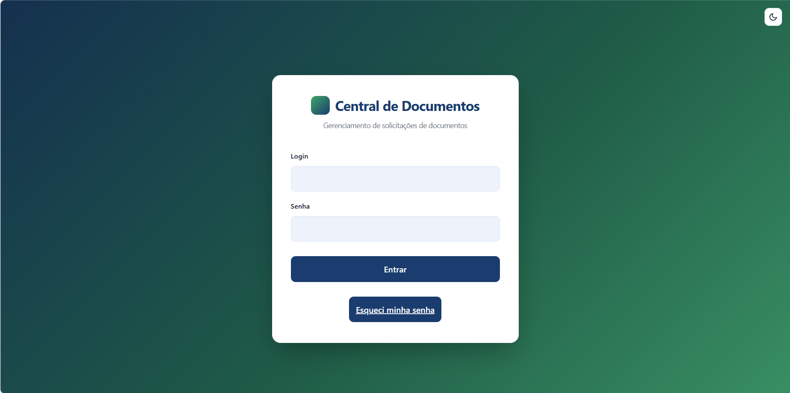
Roteiro sugerido de primeiro acesso:
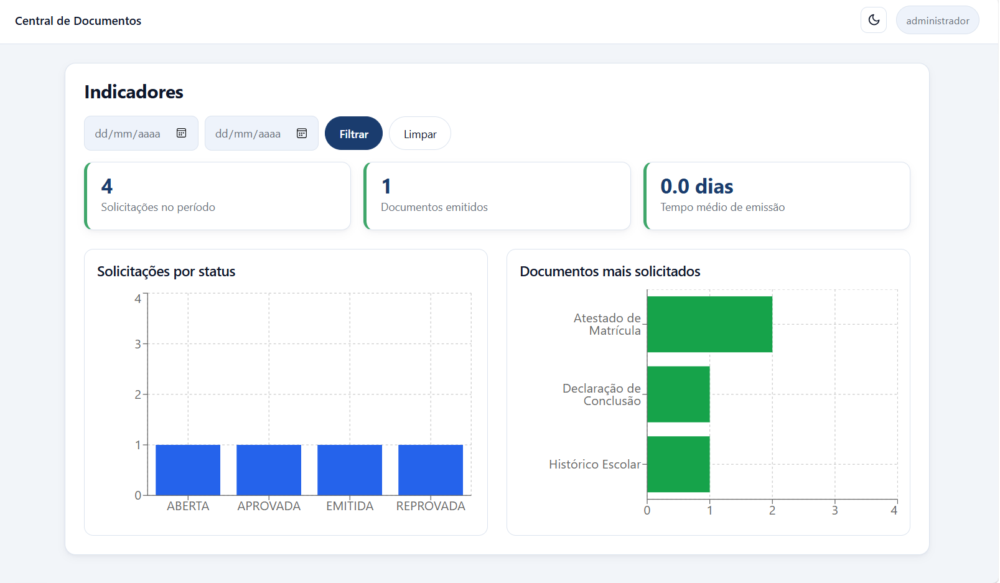
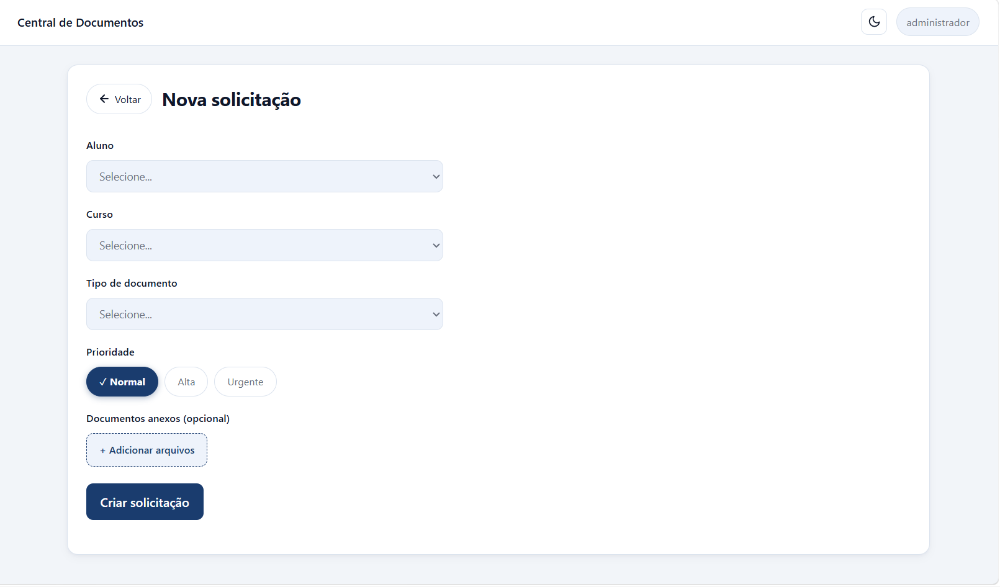
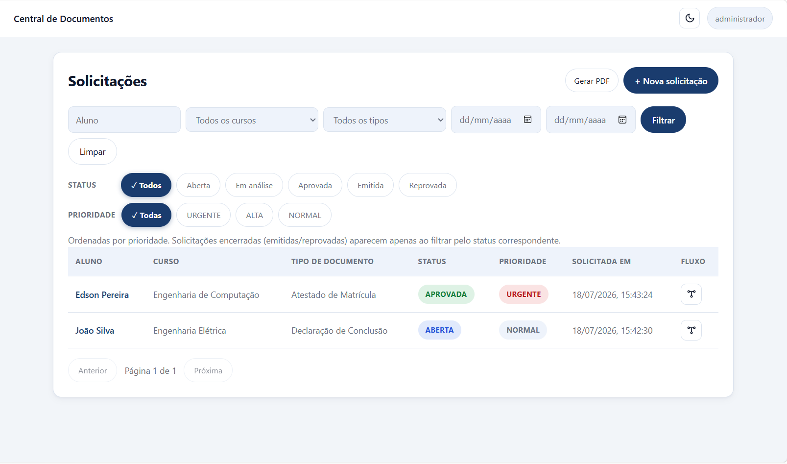
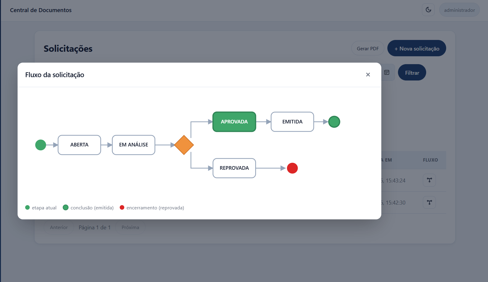
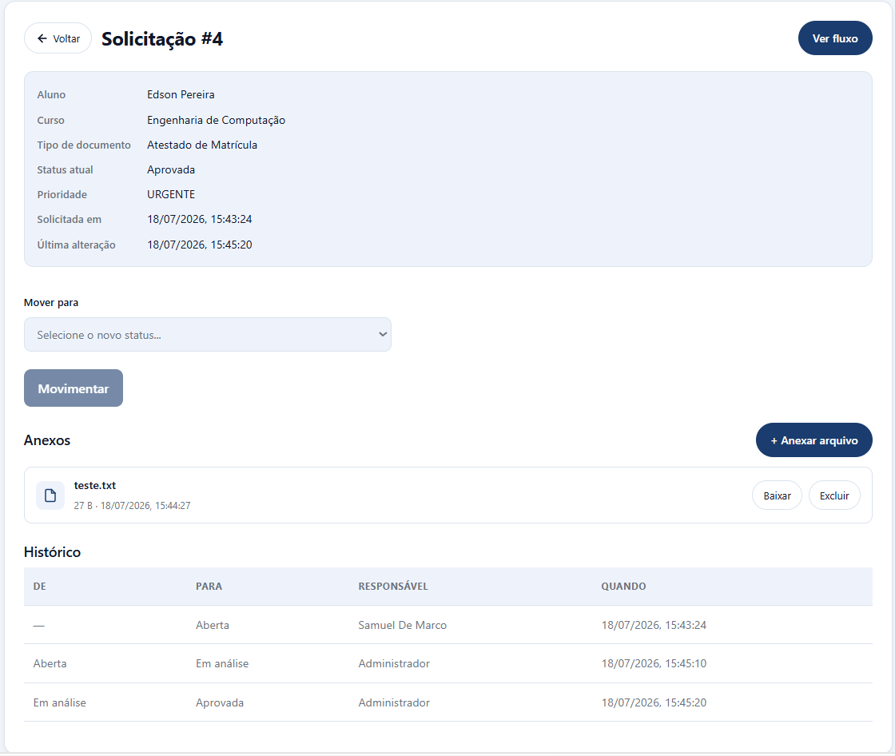
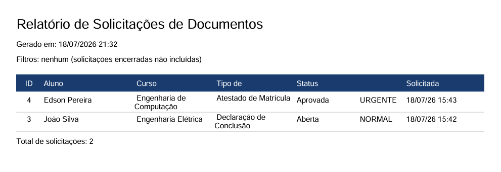
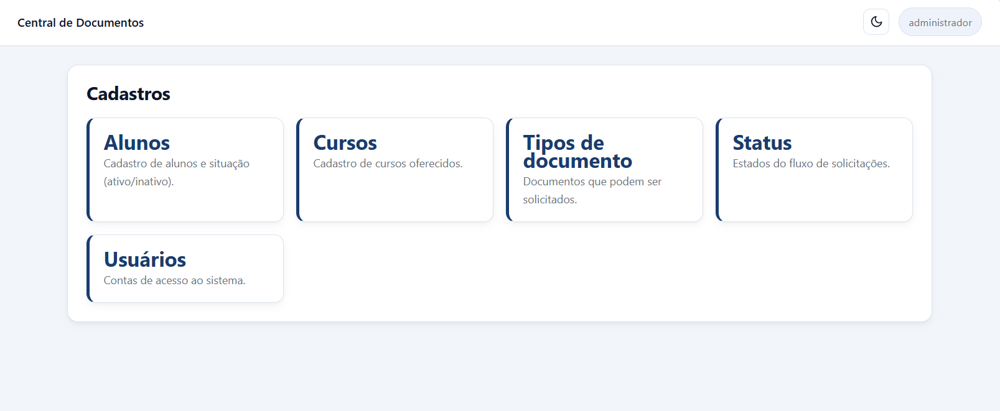
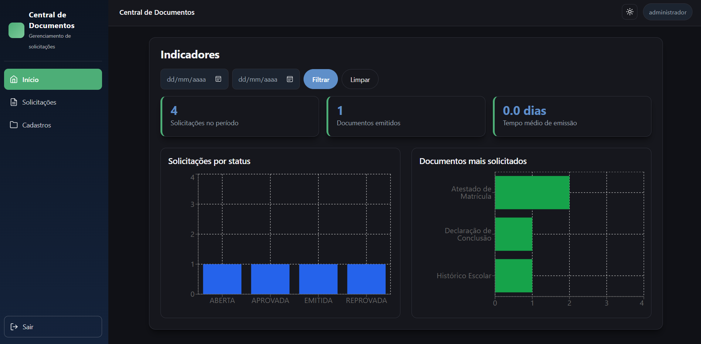
Com o backend rodando, o Swagger UI fica em:
| Recurso | Endereço |
|---|---|
| Swagger UI | http://localhost:8080/swagger-ui.html |
| OpenAPI (JSON) | http://localhost:8080/v3/api-docs |
Como testar um endpoint protegido:
POST /api/auth/login com login e senha do admin — copie o token da resposta.GET /api/solicitacoes.prod (é uma superfície de ataque desnecessária em produção). Ele está disponível nos perfis dev e docker.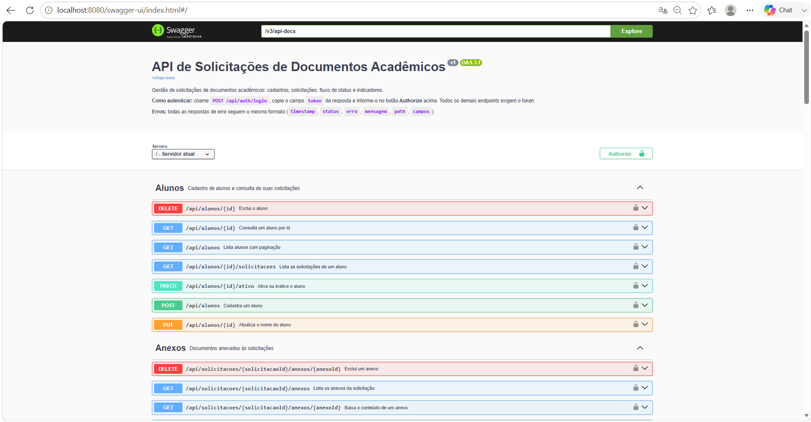
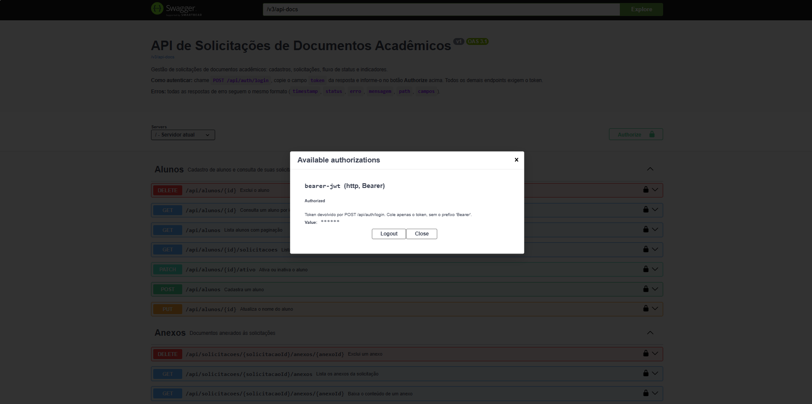
# unitários (H2, rápido) — 104 testes
./mvnw test
# unitários + integração (Testcontainers, exige Docker) + análise estática
./mvnw verify
# frontend
cd frontend && npm run build && npm run lintPerfis de acesso, o ciclo de vida de uma solicitação e o que cada tela faz.
Todo acesso é autenticado por token JWT. Há três perfis, e o que cada um pode fazer é decidido no servidor (a interface só esconde botões por conveniência — a regra que vale é a da API).
| Perfil | O que pode fazer |
|---|---|
| ADMIN | Tudo: cadastros (alunos, cursos, tipos, status, usuários), solicitações, movimentação de status, anexos e exclusões. |
| OPERADOR | Cria e movimenta solicitações, anexa e baixa documentos. Não acessa a aba de Cadastros nem exclui recursos. |
| CONSULTA | Somente leitura: visualiza solicitações, dashboard e relatórios. Não cria nem altera nada. |
DELETE) são sempre ADMIN; leituras (GET) exigem apenas estar autenticado.Cada solicitação de documento percorre uma sequência de etapas (status). O caminho é fixo e validado pelo servidor — não é possível pular etapas nem voltar de uma etapa final.
Toda mudança de status passa por três checagens, nesta ordem:
codigoResponsavel; se não bater com o do usuário autenticado, a operação é recusada.422).403). Não há atalho de administrador aqui.Cada solicitação tem uma prioridade: URGENTE, ALTA ou NORMAL. A listagem já vem ordenada por prioridade (urgentes primeiro) e, dentro da mesma prioridade, das mais recentes para as mais antigas.
Para manter a tela focada no que precisa de ação, as solicitações finalizadas (EMITIDA e REPROVADA) não aparecem na listagem padrão — elas só surgem quando você filtra explicitamente por esse status.
O acesso é por login e senha. Na própria tela de login há o fluxo “Esqueci a senha”: o usuário informa o login, o sistema gera um código de 6 dígitos (válido por 15 minutos, uso único) e, com esse código, define uma nova senha.
Cartões de resumo, gráficos por status e por período, e os documentos mais solicitados, com um filtro de período que atualiza os indicadores. Serve para acompanhar o volume e a distribuição das solicitações.
É o coração do sistema. Nela você:
Telas para manter os dados de base: alunos, cursos, tipos de documento, status (onde se pode designar um responsável por etapa) e usuários (com seus perfis). As validações do servidor — como nomes duplicados — são exibidas ao usuário.
Um botão no topo alterna entre modo claro e escuro, e a preferência fica salva no navegador.